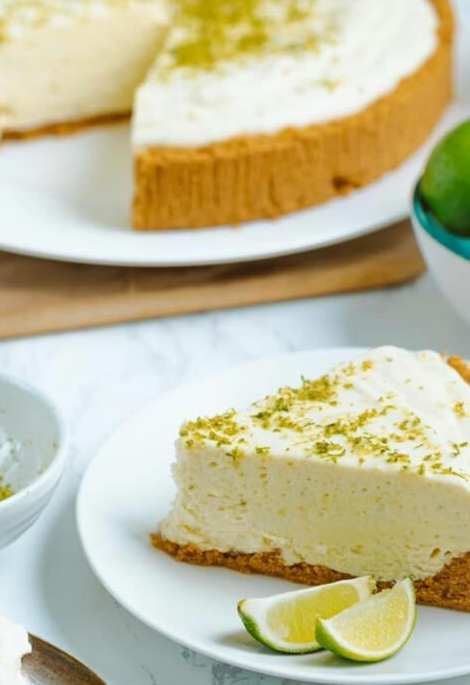

Homepage
Key Lime Pie

Description
I was craving key lime pie one day and found a great recipe online for key lime pie without key limes.
That seemed like a fun idea, but I also had a roommate at the time whose mother had a great key lime recipe we had all enjoyed before.
I decided to make both of the pies, compare them, modify both recipes and try them again, and keep on experimenting with them until I was happy.
I'm finally happy. This recipe is a combination of the two recipes and is my favorite variation that came from this whole experiment.
If you'd like to see the source recipes, the majority was taken from this Once Upon a Chef recipe,
with some modifications inspired by this Souffle Bombay recipe.
Ingredients
- 2 cups crushed graham cracker crumbs
- 1/3 cup brown sugar
- 6 TBSP butter, melted
- Two 14-oz cans sweetened condensed milk
- 1 cup plain Greek yogurt
- 1 TBSP lime zest
- 1/2 cup fresh lime juice
- 1/4 cup key lime juice
Steps
- Preheat oven to 375.
- Combine graham cracker crumbs, melted butter, and brown sugar. Press into a 9-inch deep dish pie pan.
- Bake for 10 minutes (you have a lot of leniency with the timing) then let cool.
- Lower oven temperature to 350.
- Whisk together both lime juices, lime zest, and yogurt. Add sweetened condensed milk and combine thoroughly.
- Pour the mixture into the warm graham cracker crust, then bake for 15 minutes. The filling will be just a little wobbly.
- Let the pie cool at room temperature until it's cool enough to touch, then cool in refrigerator for a few hours before serving
(you can serve sooner, but this gives the pie time to settle into the flavor).